ATLAS：学习向未见领域进行零样本推荐
ATLAS 的完整标题是 ATLAS: Learning to Recommend Across Unseen Domains。论文由 Sony Research India 的 User Engagement Research 团队完成，一作 Pervez Shaik 的主机构也是 Sony Research India；其他作者包括 Prosenjit Biswas、Abhinav Thorat、Ravi Kolla 与 Niranjan Pedanekar。论文于 2026 年 8 月 4 日公开，入口为 arXiv:2608.03899。本轮在 arXiv 页面与论文正文中没有核验到可独立访问的官方代码仓库或项目页，因此开源状态应视为“尚未核验到”，不能据此推断代码已经开放。
这篇论文把“跨域推荐”推进到一个更严格的测试：不是拿到目标域后再做映射、微调或联合训练，而是在五个彼此异构的源域上训练一个检索器，随后冻结模型，直接到十个训练时完全未出现的 Amazon 类目中排序。它的技术主线也很清楚：物品侧用领域对抗抹掉来源标签，用户侧用 Gromov–Wasserstein 几何约束对齐群体关系，再用分层 residual vector quantization（RVQ）把连续表示吸附到共享的离散支持区域。
推荐器通常被训练域绑定：换到用户、物品和行为分布都未见过的新目录，往往必须重训、适配，或借助语言模型预训练。ATLAS 追问的是更严格的问题——只在多个异构源域上学习一次，冻结后能否直接服务用户与物品均不重叠的未见领域。
1. 背景和问题
1.1 RDG 到底比跨域推荐严格在哪里
传统推荐器的参数往往和一个具体交互环境绑在一起。LightGCN 依赖该域的用户—物品二部图与 ID embedding，SASRec、BERT4Rec 等序列模型也在固定物品词表和行为分布上学习。一旦从电影目录换到杂货、软件或乐器目录，用户集合、物品集合、文本风格、流行度结构与交互稀疏度都会变化。即使模型结构能复用，原来的 embedding table 和排序边界也不能自然覆盖全新的实体。常见解决办法是让目标域进入训练过程：寻找重叠用户、学习源到目标的映射、做分布对齐，或拿目标域交互继续微调。这样解决的是“如何迁移到一个已知目标”，而不是“能否在部署前不知道目标是谁”。
ATLAS 把后一个问题命名为 Recommendation Domain Generalization（RDG）。设源域集合为 $D_{src}=\{D_1,\ldots,D_K\}$，每个域 $D_k=(U_k,I_k,R_k)$ 都有自己的用户、物品和交互；域与域之间不共享用户或物品。目标域 $D_t=(U_t,I_t,R_t)$ 在源域训练、超参选择与表示适配中完全不可见。训练结束后，投影器和码本冻结，直接处理新的用户与目录。这个设定排除了“先观察目标域再决定模型”的退路，也排除了通过共享 ID 偷渡对应关系。
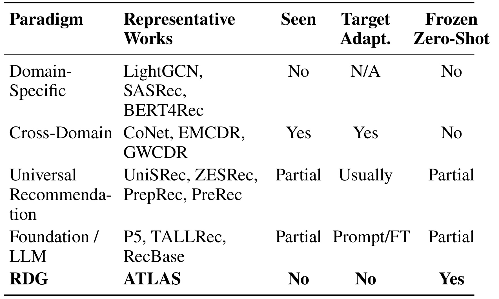
Table 1 要读的不是某个 baseline 名称，而是后三列的约束组合。领域专用方法不看目标域，但也没有冻结零样本能力；跨域方法明确看过目标域并需要适配；通用推荐和 foundation/LLM 路线对目标域可见性、微调或提示依赖通常是“部分”。只有 RDG 同时要求 训练阶段不看目标域、部署时不做目标适配、一个冻结模型直接服务未见域。因此 ATLAS 和一般 zero-shot 文本推荐也不完全等价：后者可能依赖大规模语言预训练带来的世界知识，ATLAS 则刻意检验仅从多域推荐交互与物品文本中能否涌现可迁移的推荐结构。表中“Frozen Zero-Shot=Yes”是论文最关键的实验合同，后续结果只有在这个合同没有被目标域调参破坏时才有意义。
1.2 “零样本”不等于没有目标域信息
这篇论文最容易被误读的地方，是把“没有目标域适配”说成“完全不使用目标域数据”。实际边界更细：目标域交互不能用于梯度更新、模型选择或表示适配，但部署时仍允许读取一个目标用户已经发生的交互历史，用这些历史物品的文本表示构造个性化查询；同时，候选物品也必须有标题和描述，才能经过冻结的 Sentence-BERT 与物品投影器。换言之，ATLAS 做的是参数级 zero-shot domain generalization，不是冷启动用户在零历史条件下的推荐，也不是在完全没有目录元数据时凭空生成候选。
这个边界与实际系统相当贴近。一个新市场或新类目上线时，团队可能不愿重新训练全套召回模型，但用户进入该域后仍会逐渐留下点击、收藏或购买记录，目录也通常有文本元数据。ATLAS 试图把这些目标域观测限制在查询构造而非模型学习。好处是一个模型可以跨目录复用；代价是训练时的用户输入包含 LightGCN 协同通道，部署时这个通道必须置零，只剩历史物品的语义均值，天然存在训练—推理分布差异。论文在附录用 modality dropout 单独检查了这条缝隙，说明作者也意识到严格冻结不是没有代价。
1.3 为什么需要三种约束而不是单一共享编码器
共享 Sentence-BERT 只能让不同域的物品落到同一个语言向量空间，却不能保证推荐模型看到的分布相同。汽车配件、电影和美妆的词汇、描述长度与主题构成都不同，经过共享 MLP 后仍可能形成彼此分离的域簇；一个从未在目标簇附近接受排序监督的打分器可能失效。用户侧更困难：不同域之间没有同一用户可配对，直接让域判别器混淆用户会忽略每个群体内部的兴趣几何。ATLAS 因而把问题拆成两种不同的不变性：物品需要降低来源域可辨识度，用户需要保留并对齐群体内部关系结构。
即使连续表示已经对齐，模型还可能留下细小的源域特异方向，目标域向量也可能落在训练支持区域之外。RVQ 在这里承担离散信息瓶颈：用多层残差码本把用户和物品投影逐级重构到源域共同学习出的码字组合上。于是三部分分别回答三个问题：物品边际是否仍暴露域标签，用户群体的相对几何是否可比，目标向量是否能被限制在源域支持的可检索区域。论文的新意不在发明全新的 GW、对抗学习或向量量化，而在于把三者组织成严格 RDG 流程，并用多源域数量效应、对齐消融和表示诊断验证这套组合。
2. 方法
ATLAS 的训练与推理链路在 Figure 1 中被明确分开。训练侧同时采样五个源域：用户含 LightGCN 协同信号与历史物品语义信号，物品只含冻结文本编码器产生的语义信号；共享投影后，用户走 GW 对齐，物品走 gradient reversal 对抗对齐，两端再分别进入三级 RVQ 码本。推理侧不再有源域图 encoder 或判别器，未见域用户由历史物品语义均值初始化，用户和物品都只经过冻结投影、硬码字分配、重构和内积检索。
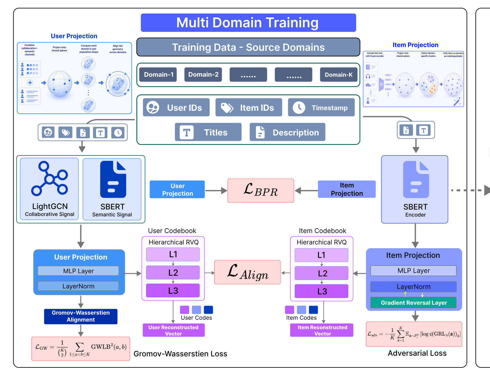
Figure 1 的训练侧说明不同信号如何分工：$L_{BPR}$ 把用户与正物品拉近并和同域负样本分开，$L_{GW}$ 约束各域用户群体的内部距离分布，$L_{adv}$ 通过 GRL 让物品投影难以暴露源域，RVQ 则在用户与物品两侧建立独立的三级码本。用户输入同时保留 LightGCN 协同信号和 SBERT 语义信号，物品端只走冻结文本编码器；两端进入共享投影后才发生对齐和离散化。图中央的 $L_{Align}$ 更像视觉总括，正文真正可复现的目标是后文 Eq. 7 的加权和。训练侧还表明两个码本彼此独立，用户码不会和物品码共享索引，但重构后的向量必须落在同一检索空间里接受内积监督。这个分工使用户关系和物品语义分别受约束，却又被同一个排序目标绑定。
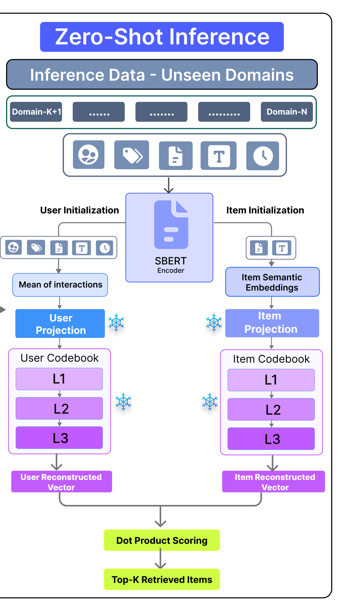
Figure 1 的推理侧把 RDG 边界画得更具体。雪花符号表示用户投影、物品投影与两套码本全部冻结；用户端不再运行 LightGCN，而是对目标域交互历史中的物品语义取均值，物品端继续由 SBERT 编码标题与描述。两端都经过硬码字分配和三级 RVQ 重构，最后才做点积和 Top-K 检索。目标域信息确实进入前向计算，但不会产生梯度，也不参与模型选择。训练和推理真正共享的是“语义初始化—共享投影—离散码本—点积”主干，源域图 encoder 与域判别器只存在于训练期；这也是为何目标用户至少要有可用历史、目标物品至少要有文本。图中两个独立冻结码本还说明，部署时不是在目标域重新聚类，而是复用源域已经学好的离散支持。这一冻结边界也决定了论文的部署定义。
2.1 物品空间统一：共享语义投影与领域对抗
对第 $k$ 个源域的物品 $i$，ATLAS 把标题和描述拼接后送入冻结文本编码器 $E_{text}$，得到 $e_i^k$；共享 MLP $P_i$ 再将它映射到 $d$ 维空间并做 $\ell_2$ 归一化，$z_i^k=P_i(e_i^k)/\|P_i(e_i^k)\|_2$。冻结 SBERT 避免不同域各自学习词表，但共享编码器并不自动意味着分布统一。为此，模型增加一个 $K$ 类判别器 $\psi$，尝试从物品向量恢复源域，物品投影器反向阻止它成功：
符号解释：$K$ 是源域数量，$P_i^k$ 表示第 $k$ 个源域经投影后的物品分布，$\psi(z)_k$ 是判别器认为向量来自第 $k$ 域的概率，$\theta_{P_i}$ 与 $\theta_\psi$ 分别是物品投影器和判别器参数。判别器想降低域分类交叉熵，投影器则想提高它；若所有源域物品分布充分重叠，最优判别概率会接近 $1/K$。这里被抹除的是“域标签可恢复信息”，不是物品语义本身，否则排序目标会和对抗目标冲突。实现时无需交替做两次优化，而是在投影器和判别器之间插入 gradient reversal layer：
符号解释：$\operatorname{GRL}_\lambda$ 前向传播是恒等映射，反向对输入梯度乘以 $-\lambda$；因此同一个下降步骤会让 $\psi$ 更会辨认域，同时让 $P_i$ 更难被辨认。论文在附录把这一点连接到 Ben-David 的域适配误差界与 Proxy A-distance，但这些理论只说明降低源域差异是有根据的必要方向，并不能单独保证未见目标域排序误差下降。如果对抗过强，域特异噪声和对推荐有用的细粒度语义可能一起被删掉；因此必须由排序损失和后续消融约束这种“过度不变性”。
2.2 用户空间统一：跨模态表示与 GW 几何对齐
源域训练时，用户有两条互补信号。协同向量 $e_{u,c}^k$ 由域内二部图上的 LightGCN 预训练得到，能编码高阶共现；语义向量 $e_{u,s}^k$ 则是该用户历史物品 SBERT 表示的均值。两者拼成 $e_u^k=[e_{u,c}^k;e_{u,s}^k]$，再由所有域共享的 $P_u$ 投影并归一化为 $z_u^k$。用户域之间没有身份对应，无法像跨域用户映射那样逐人对齐；论文转而比较每个域内部用户两两距离的分布。
从一个域采样 $n$ 个用户，先构造余弦距离 $D_{ab}^k=1-\langle z_{u,a}^k,z_{u,b}^k\rangle$，取严格上三角的 $N=\binom{n}{2}$ 个值并从小到大排序。对任意两个源域 $a,b$，同排名距离的平方差就是一维经验分布间的 $W_2^2$；对全部域对取平均得到：
符号解释：$d_{(r)}^k$ 是第 $k$ 域内第 $r$ 小的用户对余弦距离，$N$ 是 mini-batch 内无序用户对数量，$\binom K2$ 是源域两两组合数。它没有寻找“汽车域用户 A 对应电影域用户 B”，而是要求两个群体的近邻、远邻和中间距离比例相似。这样保留的是偏好群体的关系几何，对用户完全不重叠的设定更自然；计算也从完整 Gromov–Wasserstein 的昂贵二次匹配退化为排序统计量比较。
符号解释后的理论边界也很重要。附录把该量称为 GW lower bound，并给出从 metric-measure space 到 distance distribution 的推导；距离分布一致是走向几何同构的必要信号，却不足以唯一确定群体结构，两套不同拓扑可能有相近的距离直方图。ATLAS 的实际保障来自它与同域排序监督联合优化，而不是 $L_{gw}$ 单独构成的充分定理。训练完成后，各域 LightGCN encoder 被丢弃；这也意味着部署端不能依靠源域图参数，只保留共享 $P_u$ 和语义通道。
2.3 分层 RVQ：把连续共享空间压到源域支持的离散区域
用户和物品分别拥有一套 $L$ 层残差码本。给定归一化向量 $z$，第 0 层残差为 $r_0=z$；每一层从码本 $C_\ell$ 中找最接近当前残差的码字，然后从残差中扣除。最终编码是 $(c_1,\ldots,c_L)$，重构向量是各层码字之和再归一化：
符号解释：$M_\ell$ 是第 $\ell$ 层码字数量，$C_\ell[m]$ 是其中第 $m$ 个码字，$c_\ell$ 是被选中的索引，$r_\ell$ 是尚未解释的残差，$\Pi_{\ell_2}$ 表示 $\ell_2$ 归一化。第一层捕捉粗粒度结构，后续层逐步补偿误差。论文使用三层，用户与物品码本规模都是 512、1024、2048。这种层级离散化的作用不只是压缩：目标域向量经过硬分配后会被拉回由源域码字张成的区域，从而削弱连续投影残留的目标域特异方向。 训练时硬最近邻不可导，因此 ATLAS 用 soft Sinkhorn assignment 传递梯度，推理时再切换为硬码字。量化损失包含 commitment、codebook 与批内码字熵三项：
符号解释：$\operatorname{sg}$ 是停止梯度算子；第一项推动 encoder 输出靠近当前重构，第二项推动码字追随 encoder，$L_{ent}$ 则根据各层 batch assignment frequency 惩罚过度集中。若没有熵项，少数码字可能吸收大多数样本，离散空间名义上很大、有效容量却很小；若量化约束过强，又会抹平对排序有用的细节。因此 Table 10 和 Figure 5 分别检查“量化是否提升目标域表现”和“码本是否真的被广泛使用”。这一训练—推理切换与表征瓶颈共同构成 RVQ 的实际作用，不能只把它理解成索引压缩。
2.4 联合目标与冻结推理：RDG 的约束落在哪里
符号解释：共享空间首先必须能做推荐。$R_k$ 是第 $k$ 域交互集合，$z_u$ 与 $z_i$ 是单位归一化投影，$i^+$ 是正物品，$i_j^-$ 是从同一域采样且排除用户已交互项后的负物品。虽然论文把它记作 $L_{bpr}$，表达式并非经典成对 logistic BPR，而是正样本对一组负样本的 softmax。负样本不跨域，因此跨域不变性不能从该项自动得到，必须由 $L_{adv}$ 与 $L_{gw}$ 提供。这个排序目标之后，完整训练目标再把两侧对齐、量化和辅助稳定器合在一起：
符号解释：$L_{aux}$ 由 centroid、user-diversity 和 per-dimension variance 稳定器构成，用来缓解紧凑超球面上的对抗振荡；它们被作者明确称为稳定器而非贡献点。论文使用 384 维共享空间、batch size 16,384、最多 4000 个 epoch、Adam 学习率 $10^{-3}$，并对 $\lambda_{gw}$、$\lambda_{adv}$ 都设为 2.0。训练结束后丢弃域判别器与各域 LightGCN，只冻结 $P_u$、$P_i$ 和两套码本。在未见域，物品文本和用户历史分别按下式构造连续投影：
符号解释：$t_i$ 是目标物品标题与描述，$e_{u,sem}^{new}$ 是目标用户已交互物品文本向量的均值，拼接向量中的 0 显式替代训练时的 LightGCN 协同通道。两端再经过各自冻结 RVQ 的硬最近码字与归一化重构，最终打分为：
符号解释：$\hat z_u^{new}$ 和 $\hat z_i^{new}$ 是码本重构后的单位向量，内积等价于余弦相似度，可用 maximum inner-product search 和标准 ANN 索引返回 Top-K。推理中没有梯度、没有目标域模型选择，也没有共享 ID；但它确实消费目标域历史和物品文本。因此 ATLAS 的可迁移核心不是“任何新域都无需数据”，而是“目标域数据只进入冻结前向计算，不进入学习”。
3. 实验结果
3.1 数据、切分与比较协议
论文使用 Amazon Reviews 2023 的 15 个类目，过滤交互少于 5 次的用户。源域是 Beauty & Personal Care、Automotive、Movies & TV、Video Games、Electronics；目标域是 Digital Music、Cell Phones、Arts & Crafts、Baby Products、Books、Musical Instruments、Office Products、Appliances、Software、Pet Supplies。每个用户最后一次交互作为测试，其余构成历史；检索指标采用 HR@10 与 NDCG@10，且在完整候选目录上全排序，不做负采样评测。
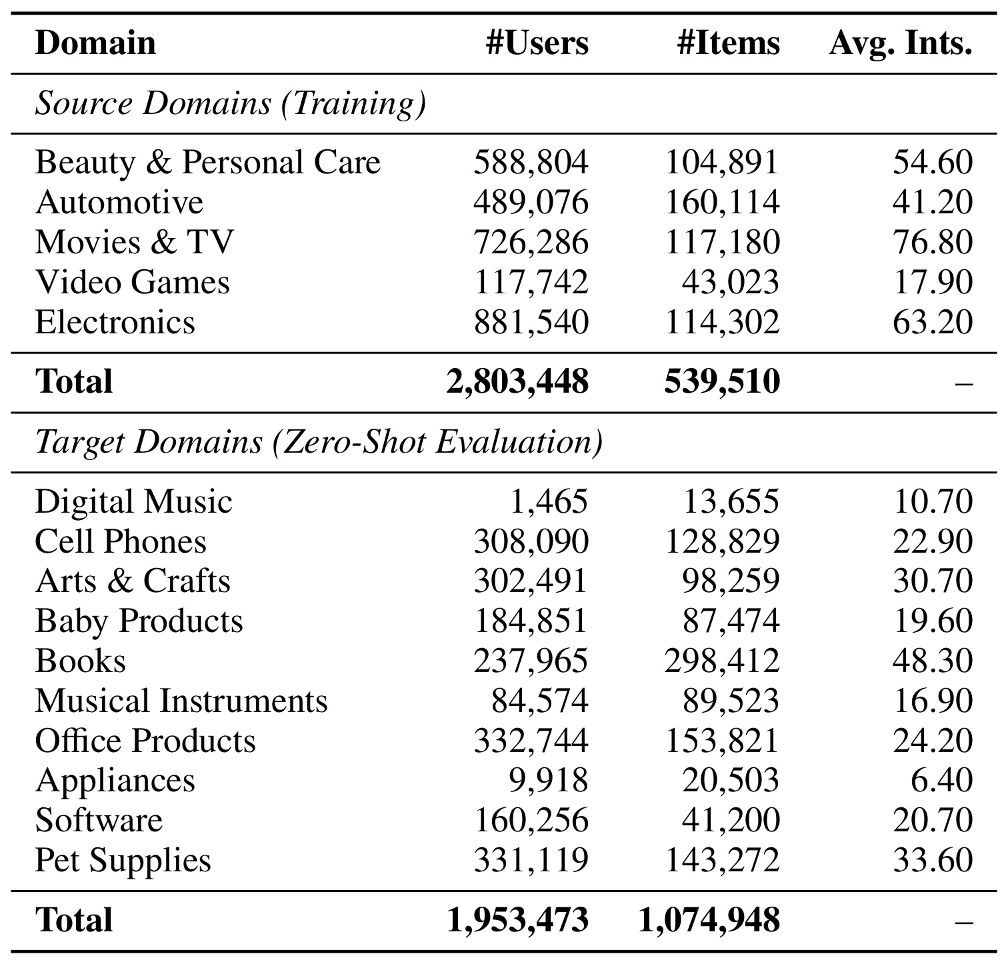
Table 9 显示源域合计 2,803,448 个用户、539,510 个物品，目标域合计 1,953,473 个用户、1,074,948 个物品。域间规模和密度差异极大：Digital Music 只有 1,465 个用户和 13,655 个物品，人均 10.7 次交互；Books 却有 298,412 个物品，Pet Supplies 有 331,119 个用户，Movies & TV 的源域人均交互达到 76.8。这个表解释了为什么 Table 3 的 HR@10 看起来只有千分位到百分位：模型要从最多近 30 万候选中命中前十，而不是从 100 个采样负例里挑选。它也提醒我们，十个目标域并非同难度；报告平均相对增益时必须同时观察逐域胜负，不能把小域和超大目录简单看成同一种任务。
baseline 被分成几组。领域专用模型在合并后的源交互池训练；零样本比较包含 ZESRec、VQ-Rec、LLM-RecG、UniSRecZS；GWCDR、PrepRec、UniSRecFT、ATLASFT 则使用目标域适配或微调，属于参考上界而不是严格 RDG 对手。另有 LLMRec、TallRec、BigRec 的二分类评分比较，但由于 LLM 上下文无法承载完整目录，协议被改成 1 个正样本加 19 个负样本，指标是 AUC 与 HR@1。两个表的数字不能直接横向换算。
3.2 五源域到十未见域：主结果与 LLM 对比
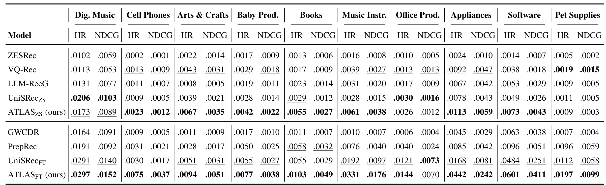
Table 3 是核心证据。严格冻结的 ATLASZS 在十个目标域中有七个超过所有 zero-shot baseline：Cell Phones 的 HR@10 为 .0023，Arts & Crafts 为 .0067，Baby Products 为 .0042，Books 为 .0055，Musical Instruments 为 .0061，Appliances 为 .0113，Software 为 .0073。Digital Music 上 UniSRecZS 更高（.0206 对 .0173），Office Products 也是 UniSRecZS 略高（.0030 对 .0026），Pet Supplies 则 VQ-Rec 领先（.0019 对 .0009）。所以作者所说“多数未见域领先”成立，但优势并不均匀；摘要报告平均相对 HR 增益 24%，不能被改写成“每个域提升 24%”。
表的下半部分是有目标适配的方法。ATLASFT 在十个域的 HR@10 都高于该组其他模型，说明同一表示也能从目标微调获益；但这不属于 RDG 的冻结能力，不能拿 ATLASFT 的 .0601 Software 结果替代 ATLASZS 的 .0073。统计上，论文报告 ATLASZS 相对多数 zero-shot baseline 的 Wilcoxon 检验 $p<0.05$，但对 UniSRecZS 的比较为 $p=0.13$ 与 $p=0.05$，并没有形成同样稳固的显著优势。三随机种子结果的标准差普遍较小，不过 baseline 大多沿用原论文单次报告，统计公平性仍有限。
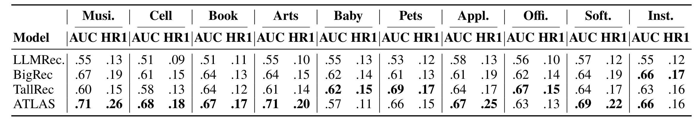
Table 6 只在 20 候选的 binary-scoring 协议内成立。在十个目标域、每域 AUC 与 HR@1 共 20 个单元中，ATLAS 在 Digital Music、Cell、Books、Arts、Appliances、Software 等多数单元领先；例如 Digital Music 为 .71/.26，高于 BigRec 的 .67/.19，Cell 为 .68/.18，高于 .61/.15。例外也清晰存在：Baby 上 TallRec 为 .62/.15，超过 ATLAS 的 .57/.11；Pets 上 TallRec 的 .69/.17 高于 .66/.15；Office 也是 TallRec 更高，Musical Instruments 的 HR@1 则 BigRec 为 .17、ATLAS 为 .16。该表支持“无需部署时 LLM 推理也能有竞争力”，但不能证明 ATLAS 在任意 LLM 推荐任务上都更强，更不能把 20 候选 AUC 当作完整目录检索的替代证据。
源域内部表现也提供一个必要检查。ATLAS 在五个源域的 HR@10 分别为 .0870、.0532、.1388、.2116、.0687，高于表中领域专用与通用 baseline，说明对齐没有以彻底牺牲训练域准确率为代价。不过这些模型被适配到统一交互池后的实现细节会影响公平性，且源域较大、训练周期长；真正支撑论文主题的仍是冻结 ATLASZS，而不是源域最优本身。
3.3 对齐目标和 RVQ 的消融
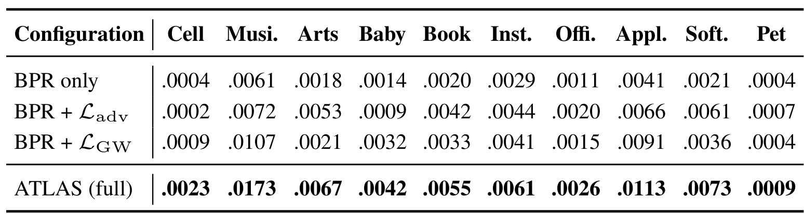
Table 4 把排序锚点、物品对抗和用户几何对齐拆开。只有 BPR 时，十个目标域 HR@10 很低；加入 $L_{adv}$ 后，Arts 从 .0018 到 .0053、Books 从 .0020 到 .0042、Software 从 .0021 到 .0061，说明消除物品域标签尤其帮助文本与品类风格变化大的域。只加入 $L_{GW}$ 时，Digital Music 从 .0061 到 .0107、Baby 从 .0014 到 .0032、Appliances 从 .0041 到 .0091，显示用户群体几何提供另一种信号。完整 ATLAS 在表中十个域都最高，例如 Digital Music .0173、Appliances .0113；两项的互补性比“某个单独 loss 全面更好”更符合数据。也要注意 Cell 在 BPR+$L_{adv}$ 下从 .0004 降到 .0002、Pet 在 BPR+$L_{GW}$ 下没有改善，单个对齐目标并非无条件有效。
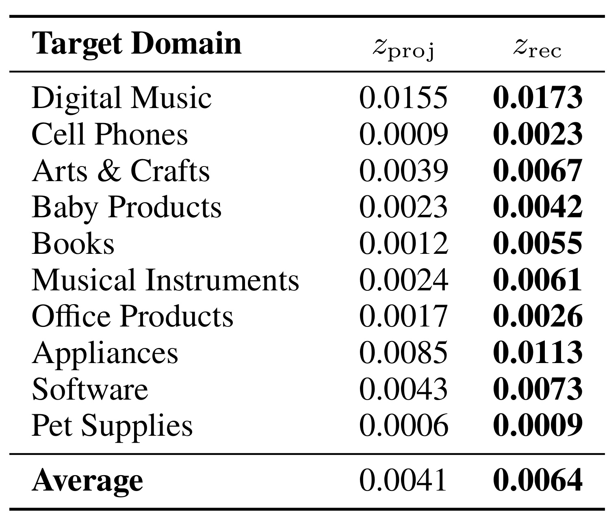
Table 10 单独隔离离散瓶颈：$z_{proj}$ 直接用连续投影评分，$z_{rec}$ 用完整 RVQ 重构向量评分。十个目标域中 $z_{rec}$ 全部更高，平均 HR@10 从 0.0041 升到 0.0064，作者换算为约 45% 相对提升。提升最大的相对变化出现在 Books（.0012 到 .0055）和 Musical Instruments（.0024 到 .0061）；Digital Music 的增幅更温和（.0155 到 .0173）。这比仅看整体 ATLAS 消融更能说明 RVQ 的作用不是装饰性压缩：在连续对齐损失已经存在时，把向量吸附到分层码字组合仍能改善每个未见域。不过它没有给出不同码本层数、码字规模和量化温度的敏感性，45% 也可能依赖当前三层 512/1024/2048 配置。
两个消融合起来形成一条较完整的因果链：$L_{adv}$ 和 $L_{GW}$ 先分别处理物品边际与用户关系几何，RVQ 再削弱连续空间里剩余的域特异方向；任何一部分单独拿出来都不等价于完整 ATLAS。论文还加入 centroid、diversity、variance 稳定器，但没有在主结果中逐项拆分，这让我们无法判断部分提升是否来自训练稳定化而不是三项核心机制本身。
3.4 多源异质性与训练—推理模态缺口
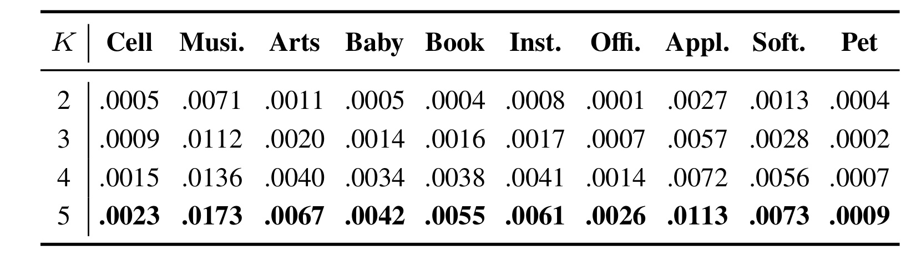
Table 5 按 Movies、Electronics、Beauty、Video Games、Automotive 的顺序逐步把源域数 $K$ 从 2 增到 5。Cell 从 .0005、.0009、.0015 升到 .0023；Digital Music 从 .0071 升到 .0173；Arts 从 .0011 升到 .0067；Appliances 从 .0027 升到 .0113。多数域呈清晰上升趋势，说明共享结构不是从单一大域复制出来，而是随着训练环境更异质才逐渐显现。Pet 在 $K=2$ 到 $K=3$ 时从 .0004 降到 .0002，因此“单调”更适合作为总体趋势而非逐单元定律。附录从 $K=1$ 开始的完整表还揭示另一面：单域 Movies 的源域 HR 很高，但跨域几乎失效，多域训练会先牺牲部分单域拟合，再随异质性增加恢复源域并提升目标域。
该实验仍有顺序混杂。$K$ 增加时并不是从所有五域组合中随机采样，而是沿固定前缀加入具体类目；性能提升既可能来自“域数量”，也可能来自后来加入的 Video Games 或 Automotive 与某些目标域在语义、稀疏度上的相似性。要把 diversity effect 变成更强结论，应报告同一 $K$ 下不同源域组合的均值和方差，并用可量化的域距离解释哪些异质性真正有效，而不只是把更多用户与交互加入训练。
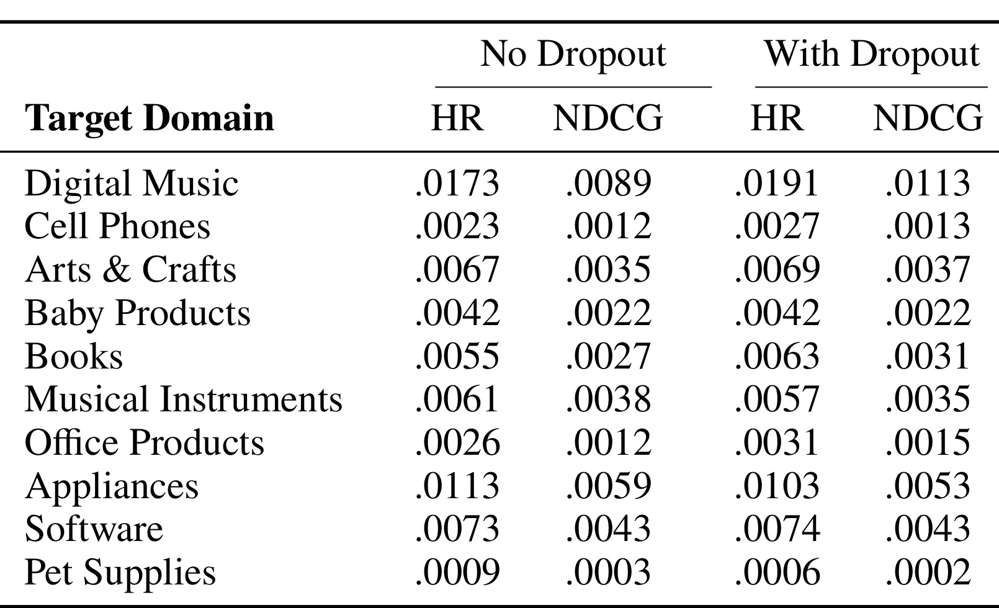
Table 7 检验另一条关键风险：训练时用户向量拼接 LightGCN 协同分量，目标推理却必须把它置零。作者以 $p_{drop}=0.2$ 随机遮掉源域协同分量，让 $P_u$ 提前见到这种输入。结果不是全面提升：Digital Music 从 .0173/.0089 升到 .0191/.0113，Cell、Arts、Books、Office 也有小幅改善；Baby 持平，Musical Instruments、Appliances、Pet Supplies 下降。作者称总体只是边际改善。更重要的是附录 Table 8 显示五个源域都明显退化，例如 Video Games HR 从 .2116 降到 .1777。这个权衡说明零填充确实构成 distribution shift，但简单 dropout 无法免费修复；ATLAS 当前选择保留源域协同信号，以更好的整体训练表示换取部署时的输入不匹配。
3.5 表示空间诊断：对齐发生了吗
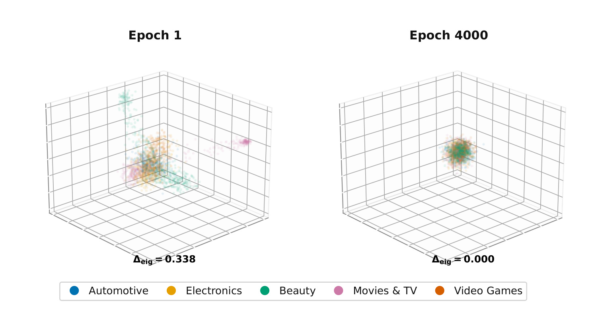
Figure 2 从每个源域取 500 个用户，投影到前三个 PCA 分量。Epoch 1 时五种颜色仍呈分离或拉长的域簇，Epoch 4000 时它们集中到相近区域，图中 $\Delta_{eig}$ 也从 0.338 降到 0。这个现象和 $L_{GW}$ 让用户距离分布接近的目标一致：模型没有跨域用户配对，却让群体关系在共享空间中更相似。不过 PCA 只是低维后验可视化，过度聚成一团也可能意味着表示塌缩；真正排除塌缩的证据必须结合源域/目标域排序仍然提升，而不能只凭“颜色重合”判断对齐成功。论文尚未给出用户局部邻域保持率或完整维度谱，因此该图是方向性诊断，不是几何等价的证明。
物品侧使用 Proxy A-distance：训练一个线性分类器区分两个源域的物品表示，若错误率为 $\epsilon_H(k,k')$，则
符号解释：$\hat d_A$ 越接近 2，线性分类器越容易辨认两个域；越接近 0，域标签越难从表示中恢复。它只测线性可分性，并不排除非线性分类器仍能识别领域，也不直接等于推荐误差。
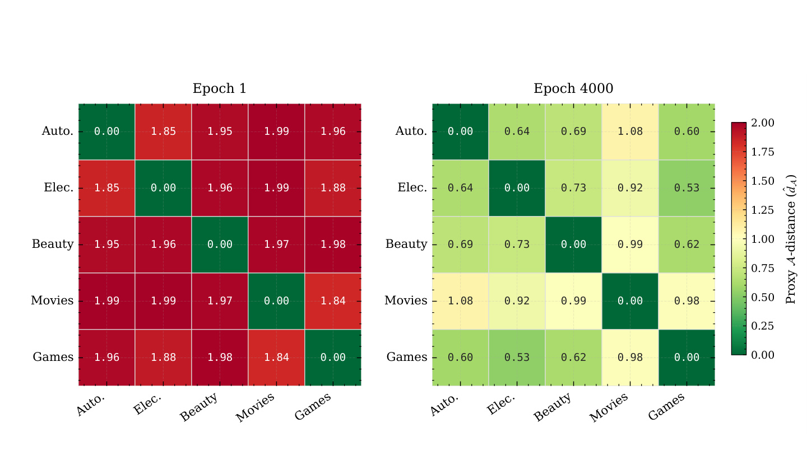
Figure 3 的 Epoch 1 矩阵中，非对角值大多在 1.84—1.99，几乎可以完美区分来源域；到 Epoch 4000 后，多数降到 0.53—1.08。Automotive—Games 从 1.96 降到 0.60，Electronics—Games 从 1.88 降到 0.53，说明 GRL 确实抹掉了大量线性域信息。Movies 与其他域的距离仍较高，例如 Automotive—Movies 为 1.08、Beauty—Movies 为 .99，提示领域不变性并未完全达成。这个残差与 Table 3 中逐域表现不均匀相呼应：统一空间能跨多数域工作，却没有让所有目录真正同分布。由于 PAD 只使用线性分类器，这里更准确的结论是“显著降低线性可恢复的域标签”，而不是所有非线性域差异均已消失。
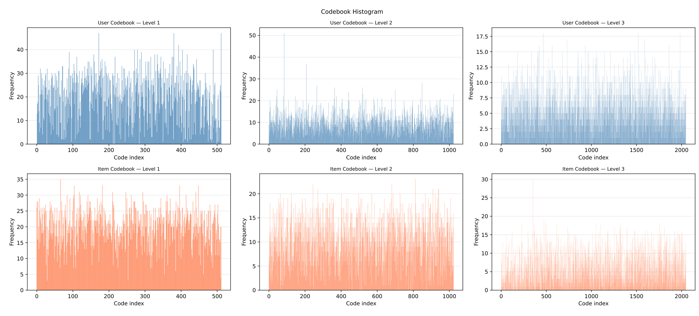
Figure 5 检查熵正则是否避免 codebook collapse。六幅直方图分别对应用户/物品的 Level 1、2、3；横轴码字索引扩展到约 512、1024、2048，柱子分布在大多数索引上，而不是只剩少数尖峰。Level 越深，单个码字的频率自然更低，但仍有广泛覆盖，这与 $L_{ent}$ 鼓励批内分配分散的设计一致。图中确实存在若干高频码字，例如用户 Level 2 的个别峰值超过 50、物品 Level 3 也有接近 30 的峰，但尚未形成“几乎所有样本落在少数码字”的明显塌缩。更严格的诊断还应给出 perplexity、有效码字数和不同域的码字共享率；当前直方图只能支持健康利用的定性判断，无法证明每个码字都承载稳定、可解释且跨域共享的推荐语义。
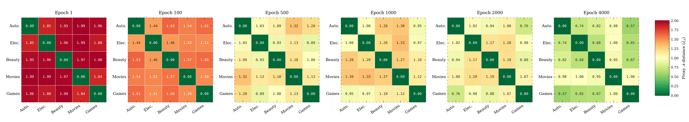
Figure 6 把 Figure 3 的两个端点扩展到 Epoch 1、100、500、1000、2000、4000。多数域对从红色逐渐转向黄色和绿色：早期 1.8—2.0，Epoch 100 约 1.4—1.6，Epoch 500 多在 .9—1.3，最终多在 .57—1.00。变化不是每个单元严格单调，例如一些域对在 1000 到 2000 之间短暂回升，这符合对抗训练可能振荡的特性，也解释了 centroid、diversity、variance 稳定器的存在。总体下降轨迹比只看最终快照更有说服力，说明低 PAD 不是偶然初始化；但它仍只覆盖五个源域，未测目标域与源域之间的 PAD，因此不能直接证明一个新目标已经落入共同分布。
综合这些证据，ATLAS 的实验链条相对完整：Table 3 证明冻结模型在多数目标域领先，Table 4/10 分别隔离对齐和 RVQ，Table 5 展示多源暴露效应，Figure 2/3/5/6 检查表示是否按设计变化。缺口主要在跨平台外部有效性、在线反馈、源域组合控制和对目标域表示距离的直接诊断，而不是主结果表完全没有机制支撑。
4. 总结
4.1 我的判断
ATLAS 最有价值的贡献，是把“zero-shot recommendation”从宽泛口号收紧为可检查的 RDG 合同：目标域不参与训练、调参或适配，用户和物品 ID 与源域完全不重叠，部署时模型冻结。方法并不依赖单一神奇模块，而是把物品域不可辨识、用户关系几何、离散共享支持区三种约束分别放到合适对象上。五源到十目标的结果、完整对齐优于单项、RVQ 在十域全部提升、源域数量效应与表示诊断相互咬合，使“推荐知识可以从多种交互环境中涌现”成为有证据的研究方向。
但标题中的“unseen domains”仍需带限定词理解：模型需要目标目录的物品文本，也需要用户已有交互历史来构造语义查询；它不是零历史冷启动，更不是无元数据推荐。论文将冻结部署和 LLM-free inference 做得很清楚，却没有证明跨电商平台、跨语言、跨行为类型仍成立。当前最稳妥的结论是：在同一 Amazon Reviews 体系内、文本可用且用户已有少量历史时，多源不变表示可以显著减少目标域训练依赖。
4.2 工程启发与复现重点
如果把 ATLAS 用作新类目召回底座，最值得复用的是“训练期可复杂、部署期只保留共享主干”的拆分：域内图 encoder 和判别器可以只服务于学习，线上仅部署 SBERT、两个投影器、两套码本与 ANN 索引。复现时应首先锁定数据合同，包括用户至少 5 次交互、leave-one-out、完整目录评测和严格禁止目标域模型选择；其次核对源域采样是否平衡，否则大域可能主导 GW 距离统计与对抗判别；最后同时监控推荐指标、PAD、码本有效利用率和训练振荡，避免只把域分类准确率降到随机水平却损害语义。
4.3 局限与后续跟进
主要局限至少有四项：
- 数据范围单一。 五个源域与十个目标域全部来自 Amazon Reviews 2023，同平台的交互语义、文本格式和评价机制共享大量先验，尚不能外推到新闻、短视频、广告或跨语言目录。
- 并非零历史冷启动。 目标用户必须有交互历史，物品必须有标题与描述；历史极短、文本缺失或目录多模态信息占主导时，语义均值初始化可能失效。
- 训练—推理模态不一致。 源域用户使用 LightGCN+SBERT，目标域协同通道置零；modality dropout 只带来边际改善并损害源域性能，说明这一缺口尚未解决。
- 源域多样性实验有组合混杂。 $K$ 沿固定类目顺序增加，没有覆盖同一 $K$ 的多种组合，难以区分域数量、样本量和特定语义邻近性。
- 代价与线上证据不足。 论文报告两张 RTX 4090、batch 16,384、最多 4000 epoch，但没有完整训练时长、显存/吞吐、目标域索引构建延迟或在线 A/B 结果。
- 理论与诊断仍是必要条件。 GW lower bound 对齐距离分布不等于完整几何同构，PAD 只检测线性域可分性；两者都不能单独保证未见域排序最优。
后续最值得做的验证有四个。第一，在同一 $K$ 下随机采样多组源域，并控制总用户数与交互数，确认 diversity effect 来自异质性而非数据规模；这会决定源域选择是否可以成为可优化策略。第二，增加跨平台、跨语言和跨模态目标域，特别测试文本弱或分布剧烈变化的目录，以测量 ATLAS 的外部有效性边界。第三，设计 train-time 缺失模态建模或双路径用户投影，专门缩小 LightGCN 通道置零的差异，同时报告源域与目标域的 Pareto 曲线。第四，在目标域上联合监控源—目标 PAD、局部邻域保持、码字共享率、延迟和在线业务指标，判断离线 HR 提升是否真正转化为稳定召回价值。
总体而言，ATLAS 不是“一个模型无需任何新域信息即可推荐”的终局方案，而是一份边界写得较清楚、机制与证据能互相验证的 RDG 起点。它最值得继续追踪的不是 24% 这个摘要数字本身，而是当源域覆盖更多不同推荐环境时，冻结检索器是否能形成可持续扩展的共享知识，以及这种能力在离开 Amazon 同平台语境后还能保留多少。